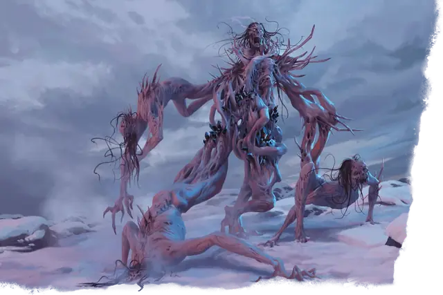

Злан
Zlan
Огромная Нежить (Волшебник), Хаотичная Злая, именной НИП

Класс Защиты 18 Инициатива +7 (17)
Хиты 199 (19к12 + 76)
Скорость 30 футов
| мод | спас | ||
|---|---|---|---|
| СИЛ | 20 | +5 | +5 |
| ЛОВ | 12 | +1 | +7 |
| ТЕЛ | 19 | +4 | +10 |
| мод | спас | ||
|---|---|---|---|
| ИНТ | 21 | +5 | +11 |
| МДР | 18 | +4 | +10 |
| ХАР | 14 | +2 | +2 |
Сопротивление урону Некротический, Электричество
Иммунитеты Холод, Яд; Испуганный, Истощение, Отравленный, Очарованный, Парализованный
Чувства пассивное Восприятие 20, Истинное зрение 120 футов
Языки Все
Опасность 18 (20 000 опыта; БВ +6)
Особенности
Чардалиновое чутьё. Злан чувствует эмоции любого в 100 милях от себя, кто касается частицы чардалина.
Легендарное сопротивление (3/день). Если Злан проваливает спасбросок, он вместо этого может в нём преуспеть.
Сопротивление магии. Злан совершает с Преимуществом спасброски от заклинаний и прочих магических эффектов.
Следующий из Семи (6/год). Когда Злан умирает в пределах 100 миль от куска чардалина хотя бы 4 дюйма (~10 см) длиной, он перерождается из этого куска чардалина спустя 1к10 дней со всеми Хитами. Новое тело появляется в соседнем с куском чардалина незанятом пространстве, а психический контроль над телом перехватывает сознание другого лича, заключённого в теле.
Действия
Мультиатака. Злан совершает три атаки Размашистым ударом или Обескураживающим разрядом в любой комбинации. Он может заменить две атаки одним использованием Сотворения заклинаний.
Размашистый удар. Бросок рукопашной атаки: +11, досягаемость 10 фт. Попадание: 12 (3к4 + 5) Дробящего урона плюс 22 (4к10) Некротического урона.
Обескураживающий разряд. Бросок дальнобойной атаки: +11, дистанция 120 фт. Попадание: 27 (4к10 + 5) Психического урона, и цель Очарована до конца своего следующего хода.
Сотворение заклинаний. Злан сотворяет одно из следующих заклинаний, не нуждаясь в Материальных компонентах (заклинательная характеристика — Интеллект, Сл спасброска заклинаний 19):
Неограниченно: Волшебная рука, Обнаружение магии, Обнаружение мыслей, Рассеивание магии, Сообщение
2/день каждое: Наблюдение, Переносящая дверь, Полёт
1/день каждое: Дезинтеграция, Помутнение разума
Реакции
Контрзаклинание. Злан сотворяет Контрзаклинание в ответ на условие этого заклинания (заклинательная характеристика — та же, что для Сотворения заклинаний).
Легендарные действия
У этого существа есть 3 использования Легендарных действий; оно может немедленно после окончания хода другого существа потратить одно использование, чтобы совершить одно из следующих действий. Существо восполняет все потраченные использования в начале каждого своего хода.
Возмездие. Злан совершает одну атаку Размашистым ударом или Обескураживающим разрядом.
Разжигание паранойи. Спасбросок Мудрости: Сл 19, одно видимое Зланом существо в 30 футах (с Помехой, если цель несёт или носит чардалин). Провал: 27 (6к8) Психического урона, и цель Очарована на 1 минуту или пока Злан не умрёт. Очарованная цель не считается ничьим союзником и действует соответствующе. Успех: Только половина урона. Провал или успех: Злан не может совершить это действие повторно до начала своего следующего хода.
Бонус мастерства +6
Злан
Коварный лич в чудовищном ледяном обличье
Злан — жуткое ледяное слияние семи личей, создавших артефакт Креншинибон, более известный как Кристальный Осколок. Злан Клервиш был одним из этих семи, и воля именно этого лича главенствует в их составной сущности. Все семь тел спаяны воедино льдом и чёрным кристаллом под названием чардалин — осколками разбитого Кристального Осколка.
Злан использует свою связь с разрушенным артефактом, чтобы психически проникать в чардалин, используя кристаллы как проводник для наблюдения за врагами и искажения разумов.
История
Тысячелетия назад семеро могущественных личей из иных миров объединились ради создания Кристального Осколка. Хотя они завидовали и не доверяли друг другу, их общей мощи хватило, чтобы породить разумный артефакт. Кристальный Осколок поглотил сознания создателей, которые с тех пор резонировали внутри кристалла. Когда Осколок был уничтожен, его обломки — чардалин — всё ещё хранили отзвуки злобных разумов своих творцов. Фрагменты льда и чардалина стянулись вокруг останков семи личей, создав слитное тело.
Злан — главенствующий разум среди личей, он управляет телом. Прочие личи неистовствуют и плетут козни, оказавшись в подчинении у того, кого прежде считали одновременно соперником и равным. Таблица «Личи Злана» даёт краткое описание каждой из составных частей.
Личи Злана
| Имя | История |
| Арджент Блэк | Явился с Негативного плана, питался ненавистью и тьмой. |
| Фетчигрол | Злоупотреблял властью духовного лидера, обменивая души на силу. |
| Первый Прародитель У | Выпустил магическую заразу, погубившую мир с миллиардами жителей. |
| Солмэ из Гхарра | Пожирал души детей, чтобы занимать их тела. |
| Вэристельф Рекс | Захватил власть как король-чародей и обменял трон на бытие лича. |
| Влад Зил Хэрвен | Погряз в алчности и менял жизни на богатство. |
| Злан Клервиш | Сейчас управляет телом; стремится откопать скрытые ужасы и руины из-под долины Ледяного Ветра. |
Личность
Злан питает склонность к магии очарования и порче разумов. В те времена, когда он трудился над созданием Кристального Осколка, Злан был верным почитателем бога тьмы, смятения и боли. Он обожает незаметно извращать чужие рассудки, сея замешательство и паранойю, а также избегает прямых действий, если можно обойтись окольными и неочевидными путями. Злан всегда просчитывает запасные планы и непредвиденные факторы. Один из таких запасных планов — чего не сумели предвидеть остальные личи — позволил ему создать амальгаму личей и подчинить их своей воле после уничтожения Кристального Осколка.
Злан строит планы по тому, как восстановить силу Кристального Осколка и завладеть ею через накопление чардалина со всей долины Ледяного Ветра. Сродство с чардалином позволяет ему собирать сведения по всему региону и через чардалин развращать тех, кто может оказаться полезен.
Нынешний замысел Злана — нагреть долину Ледяного Ветра снизу, чтобы растопить льды Подземья и высвободить чудовищные ужасы из ледяного стазиса. Это таяние заодно обнажит древние места, хранящие силу, которая нужна Злану, чтобы навязать свою злую волю всей долине.
Как использовать Злана
Злан — жуткая амальгама льда, чёрного кристалла и инородной мертвечины. Персонажи должны увидеть его задолго до непосредственной встречи: силуэт Злана может медленно ползти по ледяным пустошам, следуя неведомой цели. До героев должны доходить рассказы о его странных способностях и тревожном психическом влиянии, создавая образ кошмарного сверхъестественного зла.
Зловещая связь Злана с чардалином позволяет ему распространять своё ментальное воздействие на друзей и врагов персонажей, а то и на них самих. Используйте психический резонанс чардалина, чтобы время от времени давать персонажам краткие, сбивчивые видения замыслов Злана, направляя сюжет.